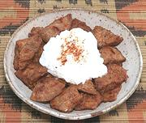

|
Kicha Fit FitAfrica, Eritrea - Kicha Fit Fit | ||||
| Serves: Effort: Sched: DoAhead: |
3 break ** 12 min Yes |
Fit Fit is a breakfast or snack dish made from leftover flatbread In Eritrea its made from Kicha Bread, and in Ethiopia from Injira Bread. This is an Eritrean version. | |||
|
9 1-1/2 1/2 1/4 ar |
in T T t |
Kicha Bread (1) Ghee (2) Berbere Spice (3) Salt Yogurt |
Kicha bread is quite dense and filling, so, unless someone is a real big eater, this recipe is breakfast for three. It can also be used as a snack, or as an appetizer (small portions, perhaps cut into squares). Do Ahead - (45 min)
|